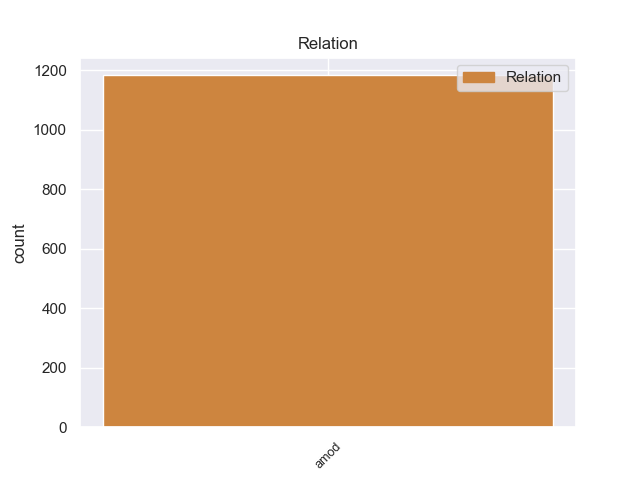
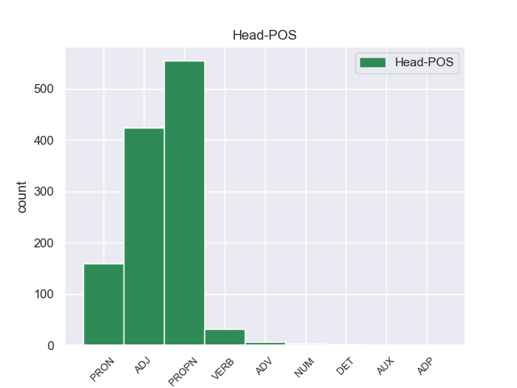
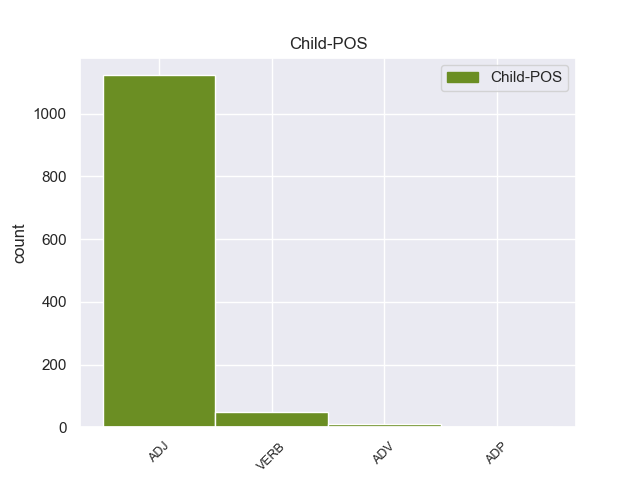

Distribution of features within this leaf



Agreement Rules sorted by frequency.
- When the dependent token is the adjectival modifier(amod) of the head token, and the head token is PROPN
1 सूत्रों _ _ _ _ 0 _ _ _
2 का _ _ _ _ 0 _ _ _
3 कहना _ _ _ _ 0 _ _ _
4 है _ _ _ _ 0 _ _ _
5 कि _ _ _ _ 0 _ _ _
6 आजाद _ _ _ _ 0 _ _ _
7 मंत्रिमंडल _ _ _ _ 0 _ _ _
8 सदस्यों _ _ _ _ 0 _ _ _
9 के _ _ _ _ 0 _ _ _
10 लिए _ _ _ _ 0 _ _ _
11 निर्वर्तमान निर्वर्तमान ADJ JJ Case=Nom 12 amod _ ChunkId=NP4|ChunkType=child|Translit=nirvartamāna
12 मुख्यमंत्री मुख्यमंत्री PROPN NNP Case=Nom|Gender=Masc|Number=Sing|Person=3 0 _ _ _
13 मुफ्ती _ _ _ _ 0 _ _ _
14 मोहम्मद _ _ _ _ 0 _ _ _
15 सईद _ _ _ _ 0 _ _ _
16 , _ _ _ _ 0 _ _ _
17 प्रधानमंत्री _ _ _ _ 0 _ _ _
18 मनमोहन _ _ _ _ 0 _ _ _
19 सिंह _ _ _ _ 0 _ _ _
20 और _ _ _ _ 0 _ _ _
21 सोनिया _ _ _ _ 0 _ _ _
22 गांधी _ _ _ _ 0 _ _ _
23 से _ _ _ _ 0 _ _ _
24 चर्चा _ _ _ _ 0 _ _ _
25 करेंगे _ _ _ _ 0 _ _ _
26 । _ _ _ _ 0 _ _ _
1 उन्होंने _ _ _ _ 0 _ _ _
2 यह _ _ _ _ 0 _ _ _
3 भी _ _ _ _ 0 _ _ _
4 कहा _ _ _ _ 0 _ _ _
5 कि _ _ _ _ 0 _ _ _
6 विदेश _ _ _ _ 0 _ _ _
7 नीति _ _ _ _ 0 _ _ _
8 में _ _ _ _ 0 _ _ _
9 वह _ _ _ _ 0 _ _ _
10 बिना _ _ _ _ 0 _ _ _
11 किसी _ _ _ _ 0 _ _ _
12 महाशक्ति _ _ _ _ 0 _ _ _
13 की _ _ _ _ 0 _ _ _
14 ओर _ _ _ _ 0 _ _ _
15 झुकाव _ _ _ _ 0 _ _ _
16 दिखाए _ _ _ _ 0 _ _ _
17 भारत _ _ _ _ 0 _ _ _
18 की _ _ _ _ 0 _ _ _
19 परंपरागत परंपरागत ADJ JJ Case=Nom 0 _ _ _
20 गुटनिरपेक्ष गुटनिरपेक्ष ADJ JJ Case=Nom 19 amod _ ChunkId=NP8|ChunkType=child|Translit=guṭanirapekṣa
21 छवि _ _ _ _ 0 _ _ _
22 कायम _ _ _ _ 0 _ _ _
23 करने _ _ _ _ 0 _ _ _
24 का _ _ _ _ 0 _ _ _
25 दबाव _ _ _ _ 0 _ _ _
26 डालेंगे _ _ _ _ 0 _ _ _
27 । _ _ _ _ 0 _ _ _
1 इसके _ _ _ _ 0 _ _ _
2 परिणामस्वरूप _ _ _ _ 0 _ _ _
3 निम्नतर _ _ _ _ 0 _ _ _
4 समूहों _ _ _ _ 0 _ _ _
5 में _ _ _ _ 0 _ _ _
6 लड़कियोंकी _ _ _ _ 0 _ _ _
7 और _ _ _ _ 0 _ _ _
8 उच्चतर _ _ _ _ 0 _ _ _
9 समूहों _ _ _ _ 0 _ _ _
10 मेंलड़कों _ _ _ _ 0 _ _ _
11 की _ _ _ _ 0 _ _ _
12 कमी _ _ _ _ 0 _ _ _
13 होने _ _ _ _ 0 _ _ _
14 लगती _ _ _ _ 0 _ _ _
15 है _ _ _ _ 0 _ _ _
16 . _ _ _ _ 0 _ _ _
17 इसप्रकार _ _ _ _ 0 _ _ _
18 के _ _ _ _ 0 _ _ _
19 अनुलोमगमन _ _ _ _ 0 _ _ _
20 की _ _ _ _ 0 _ _ _
21 प्रवृत्ति _ _ _ _ 0 _ _ _
22 भारत _ _ _ _ 0 _ _ _
23 मेंकेरल _ _ _ _ 0 _ _ _
24 , _ _ _ _ 0 _ _ _
25 गुजरात _ _ _ _ 0 _ _ _
26 , _ _ _ _ 0 _ _ _
27 बंगाल _ _ _ _ 0 _ _ _
28 तथा _ _ _ _ 0 _ _ _
29 उत्तर _ _ _ _ 0 _ _ _
30 प्रदेश _ _ _ _ 0 _ _ _
31 के _ _ _ _ 0 _ _ _
32 कुछ _ _ _ _ 0 _ _ _
33 भागों _ _ _ _ 0 _ _ _
34 में _ _ _ _ 0 _ _ _
35 पायी _ _ _ _ 0 _ _ _
36 जाती _ _ _ _ 0 _ _ _
37 है _ _ _ _ 0 _ _ _
38 यहप्रवृत्ति _ _ _ _ 0 _ _ _
39 जातियों _ _ _ _ 0 _ _ _
40 की _ _ _ _ 0 _ _ _
41 उर्ध्वगामी _ _ _ _ 0 _ _ _
42 गतिशीलता _ _ _ _ 0 _ _ _
43 का _ _ _ _ 0 _ _ _
44 प्रमाण _ _ _ _ 0 _ _ _
45 है _ _ _ _ 0 _ _ _
46 . _ _ _ _ 0 _ _ _
47 गति _ _ _ _ 0 _ _ _
48 शीलता _ _ _ _ 0 _ _ _
49 केलिये _ _ _ _ 0 _ _ _
50 अनुलोमगमन _ _ _ _ 0 _ _ _
51 इन _ _ _ _ 0 _ _ _
52 अर्थों _ _ _ _ 0 _ _ _
53 में _ _ _ _ 0 _ _ _
54 भी _ _ _ _ 0 _ _ _
55 महत्वपूर्ण _ _ _ _ 0 _ _ _
56 है _ _ _ _ 0 _ _ _
57 किकोई _ _ _ _ 0 _ _ _
58 जाति _ _ _ _ 0 _ _ _
59 अथवा _ _ _ _ 0 _ _ _
60 उप _ _ _ _ 0 _ _ _
61 - _ _ _ _ 0 _ _ _
62 जातिअपनी _ _ _ _ 0 _ _ _
63 जीवन _ _ _ _ 0 _ _ _
64 पद्धति _ _ _ _ 0 _ _ _
65 का _ _ _ _ 0 _ _ _
66 संस्कृतीकरण _ _ _ _ 0 _ _ _
67 कर _ _ _ _ 0 _ _ _
68 ले _ _ _ _ 0 _ _ _
69 फिर _ _ _ _ 0 _ _ _
70 जाति _ _ _ _ 0 _ _ _
71 के _ _ _ _ 0 _ _ _
72 ढाँचे _ _ _ _ 0 _ _ _
73 में _ _ _ _ 0 _ _ _
74 अपने _ _ _ _ 0 _ _ _
75 आस _ _ _ _ 0 _ _ _
76 - _ _ _ _ 0 _ _ _
77 पासकी _ _ _ _ 0 _ _ _
78 जातियों _ _ _ _ 0 _ _ _
79 में _ _ _ _ 0 _ _ _
80 या _ _ _ _ 0 _ _ _
81 मूल _ _ _ _ 0 _ _ _
82 प्रशाखा _ _ _ _ 0 _ _ _
83 से _ _ _ _ 0 _ _ _
84 श्रेष्ठ _ _ _ _ 0 _ _ _
85 होने _ _ _ _ 0 _ _ _
86 का _ _ _ _ 0 _ _ _
87 दावा _ _ _ _ 0 _ _ _
88 करें _ _ _ _ 0 _ _ _
89 . _ _ _ _ 0 _ _ _
90 उदाहरण _ _ _ _ 0 _ _ _
91 केलिये _ _ _ _ 0 _ _ _
92 प्रो _ _ _ _ 0 _ _ _
93 . _ _ _ _ 0 _ _ _
94 निवास _ _ _ _ 0 _ _ _
95 ने _ _ _ _ 0 _ _ _
96 अपने _ _ _ _ 0 _ _ _
97 अध्ययन _ _ _ _ 0 _ _ _
98 में _ _ _ _ 0 _ _ _
99 यह _ _ _ _ 0 _ _ _
100 पाया _ _ _ _ 0 _ _ _
101 कि _ _ _ _ 0 _ _ _
102 उन्नीसवीं _ _ _ _ 0 _ _ _
103 शताब्दी _ _ _ _ 0 _ _ _
104 केपूर्वाद्ध _ _ _ _ 0 _ _ _
105 अक्मा _ _ _ _ 0 _ _ _
106 कुर्ग _ _ _ _ 0 _ _ _
107 ब्राह्मणों _ _ _ _ 0 _ _ _
108 के _ _ _ _ 0 _ _ _
109 प्रभाव _ _ _ _ 0 _ _ _
110 में _ _ _ _ 0 _ _ _
111 आये _ _ _ _ 0 _ _ _
112 और _ _ _ _ 0 _ _ _
113 उन्होंने _ _ _ _ 0 _ _ _
114 मदिरापानछोड़ _ _ _ _ 0 _ _ _
115 दिया _ _ _ _ 0 _ _ _
116 , _ _ _ _ 0 _ _ _
117 शाकाहारी _ _ _ _ 0 _ _ _
118 हो _ _ _ _ 0 _ _ _
119 गये _ _ _ _ 0 _ _ _
120 और _ _ _ _ 0 _ _ _
121 यज्ञोपवीत _ _ _ _ 0 _ _ _
122 पहनने _ _ _ _ 0 _ _ _
123 लगे _ _ _ _ 0 _ _ _
124 . _ _ _ _ 0 _ _ _
125 कालान्तर _ _ _ _ 0 _ _ _
126 में _ _ _ _ 0 _ _ _
127 उनकाएक _ _ _ _ 0 _ _ _
128 अलग _ _ _ _ 0 _ _ _
129 अर्न्तगामी _ _ _ _ 0 _ _ _
130 समूह _ _ _ _ 0 _ _ _
131 बन _ _ _ _ 0 _ _ _
132 गया _ _ _ _ 0 _ _ _
133 यहाँ _ _ _ _ 0 _ _ _
134 तक _ _ _ _ 0 _ _ _
135 कहा _ _ _ _ 0 _ _ _
136 जा _ _ _ _ 0 _ _ _
137 सकता _ _ _ _ 0 _ _ _
138 है _ _ _ _ 0 _ _ _
139 कि _ _ _ _ 0 _ _ _
140 जाति _ _ _ _ 0 _ _ _
141 के _ _ _ _ 0 _ _ _
142 इतिहासमें _ _ _ _ 0 _ _ _
143 मूल _ _ _ _ 0 _ _ _
144 समूह _ _ _ _ 0 _ _ _
145 से _ _ _ _ 0 _ _ _
146 ऐसे _ _ _ _ 0 _ _ _
147 विखण्डन _ _ _ _ 0 _ _ _
148 के _ _ _ _ 0 _ _ _
149 परिणामस्वरूप _ _ _ _ 0 _ _ _
150 नये _ _ _ _ 0 _ _ _
151 जाति _ _ _ _ 0 _ _ _
152 समूहोंका _ _ _ _ 0 _ _ _
153 उदय _ _ _ _ 0 _ _ _
154 होतारहा _ _ _ _ 0 _ _ _
155 है _ _ _ _ 0 _ _ _
156 . _ _ _ _ 0 _ _ _
157 यद्यपि _ _ _ _ 0 _ _ _
158 यह _ _ _ _ 0 _ _ _
159 सत्य _ _ _ _ 0 _ _ _
160 है _ _ _ _ 0 _ _ _
161 कि _ _ _ _ 0 _ _ _
162 विखण्डन _ _ _ _ 0 _ _ _
163 होता _ _ _ _ 0 _ _ _
164 रहा _ _ _ _ 0 _ _ _
165 है _ _ _ _ 0 _ _ _
166 परन्तु _ _ _ _ 0 _ _ _
167 जाति _ _ _ _ 0 _ _ _
168 गतिशीलताके _ _ _ _ 0 _ _ _
169 परिणामस्वरूप _ _ _ _ 0 _ _ _
170 जाति _ _ _ _ 0 _ _ _
171 की _ _ _ _ 0 _ _ _
172 प्रशाखाओं _ _ _ _ 0 _ _ _
173 में _ _ _ _ 0 _ _ _
174 केवल _ _ _ _ 0 _ _ _
175 पदमूलक _ _ _ _ 0 _ _ _
176 परिवर्तन _ _ _ _ 0 _ _ _
177 हुए _ _ _ _ 0 _ _ _
178 हैंइनके _ _ _ _ 0 _ _ _
179 ढाँचे _ _ _ _ 0 _ _ _
180 में _ _ _ _ 0 _ _ _
181 कोई _ _ _ _ 0 _ _ _
182 परिवर्तन _ _ _ _ 0 _ _ _
183 नहीं _ _ _ _ 0 _ _ _
184 हुआ _ _ _ _ 0 _ _ _
185 है _ _ _ _ 0 _ _ _
186 . _ _ _ _ 0 _ _ _
187 २ _ _ _ _ 0 _ _ _
188 - _ _ _ _ 0 _ _ _
189 - _ _ _ _ 0 _ _ _
190 संस्कृतीकरण _ _ _ _ 0 _ _ _
191 परिवर्तनशीलप्रक्रिया _ _ _ _ 0 _ _ _
192 है _ _ _ _ 0 _ _ _
193 - _ _ _ _ 0 _ _ _
194 - _ _ _ _ 0 _ _ _
195 इस _ _ _ _ 0 _ _ _
196 प्रक्रिया _ _ _ _ 0 _ _ _
197 का _ _ _ _ 0 _ _ _
198 सीधा _ _ _ _ 0 _ _ _
199 सम्बन्ध _ _ _ _ 0 _ _ _
200 परिवर्तन _ _ _ _ 0 _ _ _
201 से _ _ _ _ 0 _ _ _
202 है _ _ _ _ 0 _ _ _
203 . _ _ _ _ 0 _ _ _
204 परिवर्तनके _ _ _ _ 0 _ _ _
205 अभाव _ _ _ _ 0 _ _ _
206 में _ _ _ _ 0 _ _ _
207 संस्कृतीकरण _ _ _ _ 0 _ _ _
208 असंभव _ _ _ _ 0 _ _ _
209 है _ _ _ _ 0 _ _ _
210 . _ _ _ _ 0 _ _ _
211 यद्यपि _ _ _ _ 0 _ _ _
212 संस्कृतीकरण _ _ _ _ 0 _ _ _
213 द्वारा _ _ _ _ 0 _ _ _
214 व्यवस्थामें _ _ _ _ 0 _ _ _
215 कोई _ _ _ _ 0 _ _ _
216 परिवर्तन _ _ _ _ 0 _ _ _
217 नहीं _ _ _ _ 0 _ _ _
218 होता _ _ _ _ 0 _ _ _
219 परन्तु _ _ _ _ 0 _ _ _
220 व्यवस्था _ _ _ _ 0 _ _ _
221 केविभिन्न _ _ _ _ 0 _ _ _
222 सोपानक्रमों _ _ _ _ 0 _ _ _
223 मेंपरि _ _ _ _ 0 _ _ _
224 - _ _ _ _ 0 _ _ _
225 वर्तन _ _ _ _ 0 _ _ _
226 अवश्य _ _ _ _ 0 _ _ _
227 होता _ _ _ _ 0 _ _ _
228 है _ _ _ _ 0 _ _ _
229 . _ _ _ _ 0 _ _ _
230 जैसे _ _ _ _ 0 _ _ _
231 गतिशीलता _ _ _ _ 0 _ _ _
232 के _ _ _ _ 0 _ _ _
233 विश्लेषण _ _ _ _ 0 _ _ _
234 से _ _ _ _ 0 _ _ _
235 यह _ _ _ _ 0 _ _ _
236 स्पष्ट _ _ _ _ 0 _ _ _
237 हैकि _ _ _ _ 0 _ _ _
238 संस्कृतीकरण _ _ _ _ 0 _ _ _
239 से _ _ _ _ 0 _ _ _
240 सम्बद्ध _ _ _ _ 0 _ _ _
241 गतिशीलता _ _ _ _ 0 _ _ _
242 व्यवस्था _ _ _ _ 0 _ _ _
243 की _ _ _ _ 0 _ _ _
244 संरचना _ _ _ _ 0 _ _ _
245 में _ _ _ _ 0 _ _ _
246 परिवर्तननहीं _ _ _ _ 0 _ _ _
247 होता _ _ _ _ 0 _ _ _
248 परन्तु _ _ _ _ 0 _ _ _
249 सम्बद्ध _ _ _ _ 0 _ _ _
250 व्यवस्था _ _ _ _ 0 _ _ _
251 में _ _ _ _ 0 _ _ _
252 पदमूलक _ _ _ _ 0 _ _ _
253 परिवर्तन _ _ _ _ 0 _ _ _
254 अवश्य _ _ _ _ 0 _ _ _
255 होते _ _ _ _ 0 _ _ _
256 हैं _ _ _ _ 0 _ _ _
257 . _ _ _ _ 0 _ _ _
258 उदाहरण _ _ _ _ 0 _ _ _
259 के _ _ _ _ 0 _ _ _
260 लिये _ _ _ _ 0 _ _ _
261 एक _ _ _ _ 0 _ _ _
262 व्यवस्था _ _ _ _ 0 _ _ _
263 में _ _ _ _ 0 _ _ _
264 विभिन्न विभिन्न ADJ JJ Case=Acc 265 amod _ _
265 जातियाँ जातियाँ PRON PRP Case=Acc|PronType=Prs 0 _ _ _
266 अपने _ _ _ _ 0 _ _ _
267 पदक्रम _ _ _ _ 0 _ _ _
268 से _ _ _ _ 0 _ _ _
269 उपर _ _ _ _ 0 _ _ _
270 उठसकती _ _ _ _ 0 _ _ _
271 है _ _ _ _ 0 _ _ _
272 और _ _ _ _ 0 _ _ _
273 नीचे _ _ _ _ 0 _ _ _
274 भी _ _ _ _ 0 _ _ _
275 आ _ _ _ _ 0 _ _ _
276 सकती _ _ _ _ 0 _ _ _
277 है _ _ _ _ 0 _ _ _
278 परन्तु _ _ _ _ 0 _ _ _
279 यह _ _ _ _ 0 _ _ _
280 सब _ _ _ _ 0 _ _ _
281 मूलतः _ _ _ _ 0 _ _ _
282 उसके _ _ _ _ 0 _ _ _
283 अपने _ _ _ _ 0 _ _ _
284 सोपनाक्रम _ _ _ _ 0 _ _ _
285 मेंघटित _ _ _ _ 0 _ _ _
286 होता _ _ _ _ 0 _ _ _
287 है _ _ _ _ 0 _ _ _
288 अर्थात् _ _ _ _ 0 _ _ _
289 अलग _ _ _ _ 0 _ _ _
290 - _ _ _ _ 0 _ _ _
291 अलग _ _ _ _ 0 _ _ _
292 जातियाँ _ _ _ _ 0 _ _ _
293 या _ _ _ _ 0 _ _ _
294 तो _ _ _ _ 0 _ _ _
295 ऊपर _ _ _ _ 0 _ _ _
296 उठी _ _ _ _ 0 _ _ _
297 या _ _ _ _ 0 _ _ _
298 नीचे _ _ _ _ 0 _ _ _
299 गिरीं _ _ _ _ 0 _ _ _
300 परन्तुपूरा _ _ _ _ 0 _ _ _
301 का _ _ _ _ 0 _ _ _
302 पूरा _ _ _ _ 0 _ _ _
303 ढाँचा _ _ _ _ 0 _ _ _
304 वैसा _ _ _ _ 0 _ _ _
305 ही _ _ _ _ 0 _ _ _
306 बना _ _ _ _ 0 _ _ _
307 रहा _ _ _ _ 0 _ _ _
308 . _ _ _ _ 0 _ _ _
309 इस _ _ _ _ 0 _ _ _
310 प्रकार _ _ _ _ 0 _ _ _
311 स्पष्ट _ _ _ _ 0 _ _ _
312 है _ _ _ _ 0 _ _ _
313 कि _ _ _ _ 0 _ _ _
314 संस्कृतीकरणकी _ _ _ _ 0 _ _ _
315 प्रक्रिया _ _ _ _ 0 _ _ _
316 द्वारा _ _ _ _ 0 _ _ _
317 सम्पूर्ण _ _ _ _ 0 _ _ _
318 व्यवस्था _ _ _ _ 0 _ _ _
319 के _ _ _ _ 0 _ _ _
320 उपागों _ _ _ _ 0 _ _ _
321 में _ _ _ _ 0 _ _ _
322 हमेशा _ _ _ _ 0 _ _ _
323 परिवर्तन _ _ _ _ 0 _ _ _
324 कीप्रक्रिया _ _ _ _ 0 _ _ _
325 गतिशील _ _ _ _ 0 _ _ _
326 रहती _ _ _ _ 0 _ _ _
327 है _ _ _ _ 0 _ _ _
328 . _ _ _ _ 0 _ _ _
329 ३ _ _ _ _ 0 _ _ _
330 - _ _ _ _ 0 _ _ _
331 जाति _ _ _ _ 0 _ _ _
332 , _ _ _ _ 0 _ _ _
333 जनजाति _ _ _ _ 0 _ _ _
334 या _ _ _ _ 0 _ _ _
335 अन्य _ _ _ _ 0 _ _ _
336 समूह _ _ _ _ 0 _ _ _
337 उतार _ _ _ _ 0 _ _ _
338 चढ़ाव _ _ _ _ 0 _ _ _
339 केक्रम _ _ _ _ 0 _ _ _
340 में _ _ _ _ 0 _ _ _
341 ऊँचा _ _ _ _ 0 _ _ _
342 स्थान _ _ _ _ 0 _ _ _
343 प्राप्तकरने _ _ _ _ 0 _ _ _
344 का _ _ _ _ 0 _ _ _
345 प्रयत्न _ _ _ _ 0 _ _ _
346 करते _ _ _ _ 0 _ _ _
347 हैं _ _ _ _ 0 _ _ _
348 - _ _ _ _ 0 _ _ _
349 - _ _ _ _ 0 _ _ _
350 जाति _ _ _ _ 0 _ _ _
351 व्यवस्था _ _ _ _ 0 _ _ _
352 मेंदो _ _ _ _ 0 _ _ _
353 प्रवित्तियाँ _ _ _ _ 0 _ _ _
354 अर्न्तनिहित _ _ _ _ 0 _ _ _
355 हैं _ _ _ _ 0 _ _ _
356 प्रथम _ _ _ _ 0 _ _ _
357 किसी _ _ _ _ 0 _ _ _
358 स्थानीय _ _ _ _ 0 _ _ _
359 समाज _ _ _ _ 0 _ _ _
360 में _ _ _ _ 0 _ _ _
361 नैतिक _ _ _ _ 0 _ _ _
362 औरधार्मिक _ _ _ _ 0 _ _ _
363 प्रतिमानों _ _ _ _ 0 _ _ _
364 सहित _ _ _ _ 0 _ _ _
365 , _ _ _ _ 0 _ _ _
366 बहुत _ _ _ _ 0 _ _ _
367 सी _ _ _ _ 0 _ _ _
368 संस्कृतियों _ _ _ _ 0 _ _ _
369 के _ _ _ _ 0 _ _ _
370 अस्तित्व _ _ _ _ 0 _ _ _
371 की _ _ _ _ 0 _ _ _
372 स्वीकृति _ _ _ _ 0 _ _ _
373 . _ _ _ _ 0 _ _ _
374 इसस्वीकृति _ _ _ _ 0 _ _ _
375 में _ _ _ _ 0 _ _ _
376 यह _ _ _ _ 0 _ _ _
377 भावना _ _ _ _ 0 _ _ _
378 निहित _ _ _ _ 0 _ _ _
379 रहती _ _ _ _ 0 _ _ _
380 हैकि _ _ _ _ 0 _ _ _
381 कुछ _ _ _ _ 0 _ _ _
382 संस्थाएँ _ _ _ _ 0 _ _ _
383 , _ _ _ _ 0 _ _ _
384 विचार _ _ _ _ 0 _ _ _
385 - _ _ _ _ 0 _ _ _
386 एवं _ _ _ _ 0 _ _ _
387 विश्वास _ _ _ _ 0 _ _ _
388 तोसमूह _ _ _ _ 0 _ _ _
389 के _ _ _ _ 0 _ _ _
390 लिए _ _ _ _ 0 _ _ _
391 उपयुक्त _ _ _ _ 0 _ _ _
392 होते _ _ _ _ 0 _ _ _
393 हैं _ _ _ _ 0 _ _ _
394 और _ _ _ _ 0 _ _ _
395 कुछनहीं _ _ _ _ 0 _ _ _
396 होते _ _ _ _ 0 _ _ _
397 . _ _ _ _ 0 _ _ _
398 जाति _ _ _ _ 0 _ _ _
399 प्रथा _ _ _ _ 0 _ _ _
400 में _ _ _ _ 0 _ _ _
401 अर्न्त _ _ _ _ 0 _ _ _
402 - _ _ _ _ 0 _ _ _
403 निहितदूसरी _ _ _ _ 0 _ _ _
404 प्रवृत्ति _ _ _ _ 0 _ _ _
405 उच्च _ _ _ _ 0 _ _ _
406 जातियों _ _ _ _ 0 _ _ _
407 के _ _ _ _ 0 _ _ _
408 जीवन _ _ _ _ 0 _ _ _
409 ढंग _ _ _ _ 0 _ _ _
410 का _ _ _ _ 0 _ _ _
411 अनुकरण _ _ _ _ 0 _ _ _
412 . _ _ _ _ 0 _ _ _
1 लोग _ _ _ _ 0 _ _ _
2 दोपहर _ _ _ _ 0 _ _ _
3 करीब _ _ _ _ 0 _ _ _
4 दोबजे _ _ _ _ 0 _ _ _
5 ( _ _ _ _ 0 _ _ _
6 अंतर्राष्ट्रीय _ _ _ _ 0 _ _ _
7 समयानुसार _ _ _ _ 0 _ _ _
8 06 _ _ _ _ 0 _ _ _
9 . _ _ _ _ 0 _ _ _
10 00बजे 00बज ADJ JJ Case=Acc|Gender=Masc|Number=Sing 13 amod _ _
11 ) _ _ _ _ 0 _ _ _
12 इकट्ठे _ _ _ _ 0 _ _ _
13 होने हो VERB VM Case=Acc|Number=Sing|VerbForm=Inf 0 _ _ _
14 शुरू _ _ _ _ 0 _ _ _
15 हुए _ _ _ _ 0 _ _ _
16 - _ _ _ _ 0 _ _ _
17 थे _ _ _ _ 0 _ _ _
18 लेकिन _ _ _ _ 0 _ _ _
19 दोपहर _ _ _ _ 0 _ _ _
20 2 _ _ _ _ 0 _ _ _
21 . _ _ _ _ 0 _ _ _
22 50बजे _ _ _ _ 0 _ _ _
23 तक _ _ _ _ 0 _ _ _
24 ज्यादातर _ _ _ _ 0 _ _ _
25 लोग _ _ _ _ 0 _ _ _
26 चले _ _ _ _ 0 _ _ _
27 गए _ _ _ _ 0 _ _ _
28 थे _ _ _ _ 0 _ _ _
29 । _ _ _ _ 0 _ _ _
1 यहांसे _ _ _ _ 0 _ _ _
2 तुम तुम ADJ JJ Case=Acc 3 amod _ _
3 पूर्व पूर्व ADV NST AdpType=Post|Case=Acc|Gender=Masc|Number=Sing|Person=3 0 _ _ _
4 वाली _ _ _ _ 0 _ _ _
5 सड़क _ _ _ _ 0 _ _ _
6 पर _ _ _ _ 0 _ _ _
7 चलना _ _ _ _ 0 _ _ _
8 , _ _ _ _ 0 _ _ _
9 उसके _ _ _ _ 0 _ _ _
10 बाद _ _ _ _ 0 _ _ _
11 एकघनघोर _ _ _ _ 0 _ _ _
12 जंगल _ _ _ _ 0 _ _ _
13 आयेगा _ _ _ _ 0 _ _ _
14 . _ _ _ _ 0 _ _ _
15 उस _ _ _ _ 0 _ _ _
16 जंगल _ _ _ _ 0 _ _ _
17 केउत्तर _ _ _ _ 0 _ _ _
18 दिशा _ _ _ _ 0 _ _ _
19 की _ _ _ _ 0 _ _ _
20 ओर _ _ _ _ 0 _ _ _
21 जाना _ _ _ _ 0 _ _ _
22 , _ _ _ _ 0 _ _ _
23 फिर _ _ _ _ 0 _ _ _
24 बड़ी _ _ _ _ 0 _ _ _
25 दूरपर _ _ _ _ 0 _ _ _
26 हीरानन्द _ _ _ _ 0 _ _ _
27 पर्वत _ _ _ _ 0 _ _ _
28 है _ _ _ _ 0 _ _ _
29 एक _ _ _ _ 0 _ _ _
30 , _ _ _ _ 0 _ _ _
31 उस _ _ _ _ 0 _ _ _
32 पर _ _ _ _ 0 _ _ _
33 चढ़नाहोगा _ _ _ _ 0 _ _ _
34 . _ _ _ _ 0 _ _ _
35 पर्वत _ _ _ _ 0 _ _ _
36 के _ _ _ _ 0 _ _ _
37 ऊपर _ _ _ _ 0 _ _ _
38 एक _ _ _ _ 0 _ _ _
39 सरोवर _ _ _ _ 0 _ _ _
40 है _ _ _ _ 0 _ _ _
41 , _ _ _ _ 0 _ _ _
42 उस _ _ _ _ 0 _ _ _
43 सरोवर _ _ _ _ 0 _ _ _
44 के _ _ _ _ 0 _ _ _
45 चारों _ _ _ _ 0 _ _ _
46 ओर _ _ _ _ 0 _ _ _
47 एक _ _ _ _ 0 _ _ _
48 प्रकार _ _ _ _ 0 _ _ _
49 के _ _ _ _ 0 _ _ _
50 पौधेलगे _ _ _ _ 0 _ _ _
51 हुए _ _ _ _ 0 _ _ _
52 हैं _ _ _ _ 0 _ _ _
53 . _ _ _ _ 0 _ _ _
54 उनकी _ _ _ _ 0 _ _ _
55 जड़ोंको _ _ _ _ 0 _ _ _
56 लाना _ _ _ _ 0 _ _ _
57 होगा _ _ _ _ 0 _ _ _
58 . _ _ _ _ 0 _ _ _
59 उस _ _ _ _ 0 _ _ _
60 जड़ _ _ _ _ 0 _ _ _
61 को _ _ _ _ 0 _ _ _
62 घिस _ _ _ _ 0 _ _ _
63 कर _ _ _ _ 0 _ _ _
64 लगाने _ _ _ _ 0 _ _ _
65 से _ _ _ _ 0 _ _ _
66 ये _ _ _ _ 0 _ _ _
67 ठीकहो _ _ _ _ 0 _ _ _
68 जायेंगे _ _ _ _ 0 _ _ _
69 . _ _ _ _ 0 _ _ _
70 " _ _ _ _ 0 _ _ _
1 सुप्रीमकोर्ट _ _ _ _ 0 _ _ _
2 द्वारा _ _ _ _ 0 _ _ _
3 प्रधानमंत्री _ _ _ _ 0 _ _ _
4 से _ _ _ _ 0 _ _ _
5 देरी _ _ _ _ 0 _ _ _
6 पर _ _ _ _ 0 _ _ _
7 सफाई _ _ _ _ 0 _ _ _
8 मांगे _ _ _ _ 0 _ _ _
9 जाने _ _ _ _ 0 _ _ _
10 के _ _ _ _ 0 _ _ _
11 एकमाह _ _ _ _ 0 _ _ _
12 पूर्व पूर्व ADJ JJ Case=Acc 13 amod _ _
13 अक्टूबर2010 अक्टूबर201० NUM QC Case=Acc|NumType=Card 0 _ _ _
14 में _ _ _ _ 0 _ _ _
15 ‘भास्कर _ _ _ _ 0 _ _ _
16 / _ _ _ _ 0 _ _ _
1 ४मील _ _ _ _ 0 _ _ _
2 के _ _ _ _ 0 _ _ _
3 घेरे _ _ _ _ 0 _ _ _
4 से _ _ _ _ 0 _ _ _
5 अधिक _ _ _ _ 0 _ _ _
6 दूर _ _ _ _ 0 _ _ _
7 नहीं _ _ _ _ 0 _ _ _
8 जाती _ _ _ _ 0 _ _ _
9 . _ _ _ _ 0 _ _ _
10 शीत _ _ _ _ 0 _ _ _
11 ऋतु _ _ _ _ 0 _ _ _
12 में _ _ _ _ 0 _ _ _
13 वीरी _ _ _ _ 0 _ _ _
14 मोट _ _ _ _ 0 _ _ _
15 अधिक _ _ _ _ 0 _ _ _
16 नहीं _ _ _ _ 0 _ _ _
17 बोलता _ _ _ _ 0 _ _ _
18 मगर _ _ _ _ 0 _ _ _
19 प्रणय _ _ _ _ 0 _ _ _
20 निवेदन _ _ _ _ 0 _ _ _
21 के _ _ _ _ 0 _ _ _
22 समय _ _ _ _ 0 _ _ _
23 वह _ _ _ _ 0 _ _ _
24 इतनाबोलता _ _ _ _ 0 _ _ _
25 है _ _ _ _ 0 _ _ _
26 कि _ _ _ _ 0 _ _ _
27 अपनी _ _ _ _ 0 _ _ _
28 पिछली पिछला ADJ JJ Case=Acc|Gender=Fem|Number=Sing 29 amod _ _
29 सारी सारा DET QF Case=Acc|Gender=Fem|Number=Sing 0 _ _ _
30 कसर _ _ _ _ 0 _ _ _
31 पूरी _ _ _ _ 0 _ _ _
32 कर _ _ _ _ 0 _ _ _
33 देता _ _ _ _ 0 _ _ _
34 है _ _ _ _ 0 _ _ _
35 . _ _ _ _ 0 _ _ _
36 इस _ _ _ _ 0 _ _ _
37 मौसम _ _ _ _ 0 _ _ _
38 में _ _ _ _ 0 _ _ _
39 वह _ _ _ _ 0 _ _ _
40 दिखनेके _ _ _ _ 0 _ _ _
41 बजाय _ _ _ _ 0 _ _ _
42 सुनाई _ _ _ _ 0 _ _ _
43 अधिक _ _ _ _ 0 _ _ _
44 देता _ _ _ _ 0 _ _ _
45 है _ _ _ _ 0 _ _ _
46 . _ _ _ _ 0 _ _ _
47 लेकिन _ _ _ _ 0 _ _ _
48 फिर _ _ _ _ 0 _ _ _
49 भी _ _ _ _ 0 _ _ _
50 इसे _ _ _ _ 0 _ _ _
51 देखे _ _ _ _ 0 _ _ _
52 बिना _ _ _ _ 0 _ _ _
53 केवल _ _ _ _ 0 _ _ _
54 आवाज _ _ _ _ 0 _ _ _
55 केसहारे _ _ _ _ 0 _ _ _
56 पहचानना _ _ _ _ 0 _ _ _
57 सही _ _ _ _ 0 _ _ _
58 नहीं _ _ _ _ 0 _ _ _
59 है _ _ _ _ 0 _ _ _
60 . _ _ _ _ 0 _ _ _
1 इंग्लैंड _ _ _ _ 0 _ _ _
2 के _ _ _ _ 0 _ _ _
3 लिए _ _ _ _ 0 _ _ _
4 वेस्टइंडीज _ _ _ _ 0 _ _ _
5 के _ _ _ _ 0 _ _ _
6 खिलाफ _ _ _ _ 0 _ _ _
7 गुरुवार _ _ _ _ 0 _ _ _
8 को _ _ _ _ 0 _ _ _
9 खेला खेल ADJ JJ Case=Nom|Gender=Masc|Number=Sing 11 amod _ _
10 - _ _ _ _ 0 _ _ _
11 जाना जा AUX VAUX Case=Nom|VerbForm=Inf 0 _ _ _
12 वाला _ _ _ _ 0 _ _ _
13 मैच _ _ _ _ 0 _ _ _
14 किसी _ _ _ _ 0 _ _ _
15 नॉकआउट _ _ _ _ 0 _ _ _
16 से _ _ _ _ 0 _ _ _
17 कम _ _ _ _ 0 _ _ _
18 - _ _ _ _ 0 _ _ _
19 नहीं _ _ _ _ 0 _ _ _
20 है _ _ _ _ 0 _ _ _
21 लेकिन _ _ _ _ 0 _ _ _
22 इसमें _ _ _ _ 0 _ _ _
23 जीत _ _ _ _ 0 _ _ _
24 दर्ज _ _ _ _ 0 _ _ _
25 करने _ _ _ _ 0 _ _ _
26 पर _ _ _ _ 0 _ _ _
27 भी _ _ _ _ 0 _ _ _
28 उसका _ _ _ _ 0 _ _ _
29 क्वॉर्टर _ _ _ _ 0 _ _ _
30 फाइनल _ _ _ _ 0 _ _ _
31 में _ _ _ _ 0 _ _ _
32 पहुंचना _ _ _ _ 0 _ _ _
33 तय _ _ _ _ 0 _ _ _
34 नहीं _ _ _ _ 0 _ _ _
35 है _ _ _ _ 0 _ _ _
36 । _ _ _ _ 0 _ _ _
1 ऐसा _ _ _ _ 0 _ _ _
2 प्रतीत _ _ _ _ 0 _ _ _
3 होता _ _ _ _ 0 _ _ _
4 हैमानो _ _ _ _ 0 _ _ _
5 पीछा _ _ _ _ 0 _ _ _
6 करने _ _ _ _ 0 _ _ _
7 वाले _ _ _ _ 0 _ _ _
8 व्यक्ति _ _ _ _ 0 _ _ _
9 स्त्री _ _ _ _ 0 _ _ _
10 का _ _ _ _ 0 _ _ _
11 अपहरण _ _ _ _ 0 _ _ _
12 करना _ _ _ _ 0 _ _ _
13 चाहते _ _ _ _ 0 _ _ _
14 हैं _ _ _ _ 0 _ _ _
15 . _ _ _ _ 0 _ _ _
16 आत्मरक्षाके _ _ _ _ 0 _ _ _
17 लिए _ _ _ _ 0 _ _ _
18 महिलाएं _ _ _ _ 0 _ _ _
19 स्वयं _ _ _ _ 0 _ _ _
20 भी _ _ _ _ 0 _ _ _
21 घातक _ _ _ _ 0 _ _ _
22 हथियार _ _ _ _ 0 _ _ _
23 रखती _ _ _ _ 0 _ _ _
24 थीं _ _ _ _ 0 _ _ _
25 . _ _ _ _ 0 _ _ _
26 संग्रहालय _ _ _ _ 0 _ _ _
27 के _ _ _ _ 0 _ _ _
28 एक _ _ _ _ 0 _ _ _
29 शिलाफलकपर _ _ _ _ 0 _ _ _
30 एक _ _ _ _ 0 _ _ _
31 पुरुष _ _ _ _ 0 _ _ _
32 अपने _ _ _ _ 0 _ _ _
33 दाएं _ _ _ _ 0 _ _ _
34 हाथ _ _ _ _ 0 _ _ _
35 में _ _ _ _ 0 _ _ _
36 किसी _ _ _ _ 0 _ _ _
37 स्त्री _ _ _ _ 0 _ _ _
38 का _ _ _ _ 0 _ _ _
39 बायां _ _ _ _ 0 _ _ _
40 हाथ _ _ _ _ 0 _ _ _
41 पकड़कर _ _ _ _ 0 _ _ _
42 उसकेस्तनों _ _ _ _ 0 _ _ _
43 पर _ _ _ _ 0 _ _ _
44 हाथ _ _ _ _ 0 _ _ _
45 रखने _ _ _ _ 0 _ _ _
46 का _ _ _ _ 0 _ _ _
47 प्रयत्न _ _ _ _ 0 _ _ _
48 कर _ _ _ _ 0 _ _ _
49 रहा _ _ _ _ 0 _ _ _
50 है _ _ _ _ 0 _ _ _
51 . _ _ _ _ 0 _ _ _
52 स्त्री _ _ _ _ 0 _ _ _
53 अपने _ _ _ _ 0 _ _ _
54 दाएं _ _ _ _ 0 _ _ _
55 हाथ _ _ _ _ 0 _ _ _
56 से _ _ _ _ 0 _ _ _
57 पुरुषपर _ _ _ _ 0 _ _ _
58 आक्रमण _ _ _ _ 0 _ _ _
59 करती _ _ _ _ 0 _ _ _
60 हुई _ _ _ _ 0 _ _ _
61 प्रतीत _ _ _ _ 0 _ _ _
62 होती _ _ _ _ 0 _ _ _
63 है _ _ _ _ 0 _ _ _
64 . _ _ _ _ 0 _ _ _
65 गृहस्थाश्रम _ _ _ _ 0 _ _ _
66 में _ _ _ _ 0 _ _ _
67 पतियों _ _ _ _ 0 _ _ _
68 की _ _ _ _ 0 _ _ _
69 देखभाल _ _ _ _ 0 _ _ _
70 के _ _ _ _ 0 _ _ _
71 अतिरिक्त _ _ _ _ 0 _ _ _
72 पत्नियों _ _ _ _ 0 _ _ _
73 का _ _ _ _ 0 _ _ _
74 दूसरामहत्व _ _ _ _ 0 _ _ _
75 - _ _ _ _ 0 _ _ _
76 ~ _ _ _ _ 0 _ _ _
77 पुर्ण _ _ _ _ 0 _ _ _
78 कार्य _ _ _ _ 0 _ _ _
79 सुचारु _ _ _ _ 0 _ _ _
80 रुप _ _ _ _ 0 _ _ _
81 से _ _ _ _ 0 _ _ _
82 गृहस्थी _ _ _ _ 0 _ _ _
83 चलाना _ _ _ _ 0 _ _ _
84 और _ _ _ _ 0 _ _ _
85 बच्चों _ _ _ _ 0 _ _ _
86 का _ _ _ _ 0 _ _ _
87 लालन _ _ _ _ 0 _ _ _
88 - _ _ _ _ 0 _ _ _
89 पालनकरना _ _ _ _ 0 _ _ _
90 था _ _ _ _ 0 _ _ _
91 . _ _ _ _ 0 _ _ _
92 यद्यपि _ _ _ _ 0 _ _ _
93 यहां _ _ _ _ 0 _ _ _
94 के _ _ _ _ 0 _ _ _
95 शिलाफलकों _ _ _ _ 0 _ _ _
96 में _ _ _ _ 0 _ _ _
97 चुल्हे _ _ _ _ 0 _ _ _
98 - _ _ _ _ 0 _ _ _
99 चक्की _ _ _ _ 0 _ _ _
100 के _ _ _ _ 0 _ _ _
101 दृश्यों _ _ _ _ 0 _ _ _
102 कासर्वथा _ _ _ _ 0 _ _ _
103 अभाव _ _ _ _ 0 _ _ _
104 है _ _ _ _ 0 _ _ _
105 तथापि _ _ _ _ 0 _ _ _
106 स्त्रियों _ _ _ _ 0 _ _ _
107 को _ _ _ _ 0 _ _ _
108 कुओं _ _ _ _ 0 _ _ _
109 , _ _ _ _ 0 _ _ _
110 तालाबों _ _ _ _ 0 _ _ _
111 या _ _ _ _ 0 _ _ _
112 नदियों _ _ _ _ 0 _ _ _
113 से _ _ _ _ 0 _ _ _
114 घड़े _ _ _ _ 0 _ _ _
115 मेंजल _ _ _ _ 0 _ _ _
116 लाते _ _ _ _ 0 _ _ _
117 हुए _ _ _ _ 0 _ _ _
118 अंकित _ _ _ _ 0 _ _ _
119 किया _ _ _ _ 0 _ _ _
120 गया _ _ _ _ 0 _ _ _
121 है _ _ _ _ 0 _ _ _
122 . _ _ _ _ 0 _ _ _
123 प्राचीन _ _ _ _ 0 _ _ _
124 भारतीय _ _ _ _ 0 _ _ _
125 विचारकों _ _ _ _ 0 _ _ _
126 ने _ _ _ _ 0 _ _ _
127 त्रिऋण _ _ _ _ 0 _ _ _
128 - _ _ _ _ 0 _ _ _
129 - _ _ _ _ 0 _ _ _
130 ऋषिऋण ऋषिऋण ADJ JJ Case=Nom 137 amod _ _
131 , _ _ _ _ 0 _ _ _
132 देवऋण _ _ _ _ 0 _ _ _
133 और _ _ _ _ 0 _ _ _
134 पितृऋण _ _ _ _ 0 _ _ _
135 - _ _ _ _ 0 _ _ _
136 - _ _ _ _ 0 _ _ _
137 का का ADP PSP AdpType=Post|Case=Nom|Gender=Masc|Number=Sing 0 _ _ _
138 वर्णनकिया _ _ _ _ 0 _ _ _
139 है _ _ _ _ 0 _ _ _
140 . _ _ _ _ 0 _ _ _
141 इनमें _ _ _ _ 0 _ _ _
142 से _ _ _ _ 0 _ _ _
143 पितृऋण _ _ _ _ 0 _ _ _
144 का _ _ _ _ 0 _ _ _
145 तात्पर्य _ _ _ _ 0 _ _ _
146 है _ _ _ _ 0 _ _ _
147 पूर्वजों _ _ _ _ 0 _ _ _
148 का _ _ _ _ 0 _ _ _
149 ऋण _ _ _ _ 0 _ _ _
150 . _ _ _ _ 0 _ _ _
Disagree Examples:
1 सलवा _ _ _ _ 0 _ _ _
2 जुड़ुम _ _ _ _ 0 _ _ _
3 के _ _ _ _ 0 _ _ _
4 चलते _ _ _ _ 0 _ _ _
5 आदिवासियों _ _ _ _ 0 _ _ _
6 को _ _ _ _ 0 _ _ _
7 हो _ _ _ _ 0 _ _ _
8 रही _ _ _ _ 0 _ _ _
9 कथित _ _ _ _ 0 _ _ _
10 परेशानियों _ _ _ _ 0 _ _ _
11 को _ _ _ _ 0 _ _ _
12 स्थानीय स्थानीय ADJ JJ Case=Acc 20 amod _ _
13 और _ _ _ _ 0 _ _ _
14 राष्ट्रीय _ _ _ _ 0 _ _ _
15 मीडिया _ _ _ _ 0 _ _ _
16 तक _ _ _ _ 0 _ _ _
17 पहुँचाने _ _ _ _ 0 _ _ _
18 में _ _ _ _ 0 _ _ _
19 भी _ _ _ _ 0 _ _ _
20 उनकी वह PRON PRP Case=Acc,Gen|Gender=Fem|Number=Sing|Person=3|Polite=Form|Poss=Yes|PronType=Prs 0 _ _ _
21 अहम _ _ _ _ 0 _ _ _
22 भूमिका _ _ _ _ 0 _ _ _
23 रही _ _ _ _ 0 _ _ _
24 । _ _ _ _ 0 _ _ _
1 प्रकाश _ _ _ _ 0 _ _ _
2 मेहरोत्रा _ _ _ _ 0 _ _ _
3 , _ _ _ _ 0 _ _ _
4 ए _ _ _ _ 0 _ _ _
5 . _ _ _ _ 0 _ _ _
6 पी _ _ _ _ 0 _ _ _
7 . _ _ _ _ 0 _ _ _
8 शर्मा _ _ _ _ 0 _ _ _
9 और _ _ _ _ 0 _ _ _
10 श्रीपति _ _ _ _ 0 _ _ _
11 मिश्र _ _ _ _ 0 _ _ _
12 की _ _ _ _ 0 _ _ _
13 छुट्टी _ _ _ _ 0 _ _ _
14 कर _ _ _ _ 0 _ _ _
15 दी _ _ _ _ 0 _ _ _
16 थी _ _ _ _ 0 _ _ _
17 . _ _ _ _ 0 _ _ _
18 इसका _ _ _ _ 0 _ _ _
19 एक _ _ _ _ 0 _ _ _
20 मकसद _ _ _ _ 0 _ _ _
21 यह _ _ _ _ 0 _ _ _
22 था _ _ _ _ 0 _ _ _
23 कि _ _ _ _ 0 _ _ _
24 नाराज _ _ _ _ 0 _ _ _
25 कांग्रेसी _ _ _ _ 0 _ _ _
26 विद्रोहियों _ _ _ _ 0 _ _ _
27 की _ _ _ _ 0 _ _ _
28 दूसरी _ _ _ _ 0 _ _ _
29 जमात _ _ _ _ 0 _ _ _
30 साथ _ _ _ _ 0 _ _ _
31 मिलने _ _ _ _ 0 _ _ _
32 का _ _ _ _ 0 _ _ _
33 साहस _ _ _ _ 0 _ _ _
34 नहीं _ _ _ _ 0 _ _ _
35 करेगी _ _ _ _ 0 _ _ _
36 और _ _ _ _ 0 _ _ _
37 दूसरे दूसरा ADJ QO Case=Acc|Gender=Masc|Number=Sing 0 _ _ _
38 वयोवृद्ध वयोवृद्ध ADJ JJ Case=Nom 37 amod _ _
39 नेता _ _ _ _ 0 _ _ _
40 कमलापति _ _ _ _ 0 _ _ _
41 त्रिपाठी _ _ _ _ 0 _ _ _
42 अकेले _ _ _ _ 0 _ _ _
43 पड़कर _ _ _ _ 0 _ _ _
44 खामोश _ _ _ _ 0 _ _ _
45 हो _ _ _ _ 0 _ _ _
46 जायेंगे _ _ _ _ 0 _ _ _
47 . _ _ _ _ 0 _ _ _
48 राजीव _ _ _ _ 0 _ _ _
49 गांधी _ _ _ _ 0 _ _ _
50 की _ _ _ _ 0 _ _ _
51 यह _ _ _ _ 0 _ _ _
52 चाल _ _ _ _ 0 _ _ _
53 काफी _ _ _ _ 0 _ _ _
54 हद _ _ _ _ 0 _ _ _
55 तक _ _ _ _ 0 _ _ _
56 कामयाब _ _ _ _ 0 _ _ _
57 रही _ _ _ _ 0 _ _ _
58 . _ _ _ _ 0 _ _ _
1 फिर _ _ _ _ 0 _ _ _
2 ईश्वर _ _ _ _ 0 _ _ _
3 का _ _ _ _ 0 _ _ _
4 भी _ _ _ _ 0 _ _ _
5 ऐसे _ _ _ _ 0 _ _ _
6 व्यक्ति _ _ _ _ 0 _ _ _
7 से _ _ _ _ 0 _ _ _
8 कोई _ _ _ _ 0 _ _ _
9 लेना _ _ _ _ 0 _ _ _
10 - _ _ _ _ 0 _ _ _
11 देना _ _ _ _ 0 _ _ _
12 नहीं _ _ _ _ 0 _ _ _
13 रहता _ _ _ _ 0 _ _ _
14 और _ _ _ _ 0 _ _ _
15 एक _ _ _ _ 0 _ _ _
16 दिन _ _ _ _ 0 _ _ _
17 मूल मूल ADJ JJ Case=Nom 0 _ _ _
18 - _ _ _ _ 0 _ _ _
19 कटे कटा ADJ JJ Case=Acc|Gender=Masc|Number=Plur 17 amod _ _
20 वृक्ष _ _ _ _ 0 _ _ _
21 की _ _ _ _ 0 _ _ _
22 तरह _ _ _ _ 0 _ _ _
23 वह _ _ _ _ 0 _ _ _
24 कहीं _ _ _ _ 0 _ _ _
25 का _ _ _ _ 0 _ _ _
26 नहीं _ _ _ _ 0 _ _ _
27 रहता _ _ _ _ 0 _ _ _
28 . _ _ _ _ 0 _ _ _
29 उसका _ _ _ _ 0 _ _ _
30 अधःपतन _ _ _ _ 0 _ _ _
31 स्वाभाविक _ _ _ _ 0 _ _ _
32 है _ _ _ _ 0 _ _ _
33 . _ _ _ _ 0 _ _ _
34 पर _ _ _ _ 0 _ _ _
35 मेरे _ _ _ _ 0 _ _ _
36 दुःख _ _ _ _ 0 _ _ _
37 का _ _ _ _ 0 _ _ _
38 सबसे _ _ _ _ 0 _ _ _
39 बड़ा _ _ _ _ 0 _ _ _
40 कारण _ _ _ _ 0 _ _ _
41 है _ _ _ _ 0 _ _ _
42 लोगों _ _ _ _ 0 _ _ _
43 में _ _ _ _ 0 _ _ _
44 धार्मिक _ _ _ _ 0 _ _ _
45 सहिष्णुता _ _ _ _ 0 _ _ _
46 का _ _ _ _ 0 _ _ _
47 अभाव _ _ _ _ 0 _ _ _
48 . _ _ _ _ 0 _ _ _
1 वाद्यों _ _ _ _ 0 _ _ _
2 के _ _ _ _ 0 _ _ _
3 उपकरणवाद्यों _ _ _ _ 0 _ _ _
4 के _ _ _ _ 0 _ _ _
5 उपकरण _ _ _ _ 0 _ _ _
6 तीन _ _ _ _ 0 _ _ _
7 वर्गों _ _ _ _ 0 _ _ _
8 में _ _ _ _ 0 _ _ _
9 विभाजित _ _ _ _ 0 _ _ _
10 किये _ _ _ _ 0 _ _ _
11 जा _ _ _ _ 0 _ _ _
12 सकते _ _ _ _ 0 _ _ _
13 हैं _ _ _ _ 0 _ _ _
14 , _ _ _ _ 0 _ _ _
15 ढाँचा _ _ _ _ 0 _ _ _
16 अथवाबनावट _ _ _ _ 0 _ _ _
17 , _ _ _ _ 0 _ _ _
18 वाद्य _ _ _ _ 0 _ _ _
19 से _ _ _ _ 0 _ _ _
20 स्वरोत्पत्ति _ _ _ _ 0 _ _ _
21 के _ _ _ _ 0 _ _ _
22 लिये _ _ _ _ 0 _ _ _
23 प्रयुक्त _ _ _ _ 0 _ _ _
24 विशिष्ट _ _ _ _ 0 _ _ _
25 कम्पत _ _ _ _ 0 _ _ _
26 पदार्थ _ _ _ _ 0 _ _ _
27 तथावस्तु _ _ _ _ 0 _ _ _
28 विशेष विशेष ADJ JJ Case=Nom 29 amod _ _
29 जिससे जो PRON PRP Case=Acc,Ins|Number=Sing|Person=3|PronType=Prs 0 _ _ _
30 छेड़ _ _ _ _ 0 _ _ _
31 कर _ _ _ _ 0 _ _ _
32 वाद्य _ _ _ _ 0 _ _ _
33 बजाया _ _ _ _ 0 _ _ _
34 जाता _ _ _ _ 0 _ _ _
35 है _ _ _ _ 0 _ _ _
36 . _ _ _ _ 0 _ _ _
37 ढ़ाँचे _ _ _ _ 0 _ _ _
38 की _ _ _ _ 0 _ _ _
39 दृष्टि _ _ _ _ 0 _ _ _
40 से _ _ _ _ 0 _ _ _
41 भारतीय _ _ _ _ 0 _ _ _
42 वाद्यों _ _ _ _ 0 _ _ _
43 में _ _ _ _ 0 _ _ _
44 प्रकृति _ _ _ _ 0 _ _ _
45 प्रदत्त _ _ _ _ 0 _ _ _
46 वस्तुओं _ _ _ _ 0 _ _ _
47 कीप्रधानता _ _ _ _ 0 _ _ _
48 है _ _ _ _ 0 _ _ _
49 , _ _ _ _ 0 _ _ _
50 सहस्त्रों _ _ _ _ 0 _ _ _
51 वर्ष _ _ _ _ 0 _ _ _
52 पूर्व _ _ _ _ 0 _ _ _
53 बांसुरी _ _ _ _ 0 _ _ _
54 जैसे _ _ _ _ 0 _ _ _
55 वाद्य _ _ _ _ 0 _ _ _
56 हड्डियों _ _ _ _ 0 _ _ _
57 , _ _ _ _ 0 _ _ _
58 बाँस _ _ _ _ 0 _ _ _
59 , _ _ _ _ 0 _ _ _
60 नरकुल _ _ _ _ 0 _ _ _
61 सींग _ _ _ _ 0 _ _ _
62 से _ _ _ _ 0 _ _ _
63 बनाये _ _ _ _ 0 _ _ _
64 जाते _ _ _ _ 0 _ _ _
65 थे _ _ _ _ 0 _ _ _
66 ताल _ _ _ _ 0 _ _ _
67 वाद्यों _ _ _ _ 0 _ _ _
68 में _ _ _ _ 0 _ _ _
69 मृत्तिका _ _ _ _ 0 _ _ _
70 का _ _ _ _ 0 _ _ _
71 ही _ _ _ _ 0 _ _ _
72 उपयोग _ _ _ _ 0 _ _ _
73 होताथा _ _ _ _ 0 _ _ _
74 . _ _ _ _ 0 _ _ _
75 तत् _ _ _ _ 0 _ _ _
76 वाद्यों _ _ _ _ 0 _ _ _
77 में _ _ _ _ 0 _ _ _
78 काष्ठ _ _ _ _ 0 _ _ _
79 तथा _ _ _ _ 0 _ _ _
80 लौकी _ _ _ _ 0 _ _ _
81 कद्दु _ _ _ _ 0 _ _ _
82 की _ _ _ _ 0 _ _ _
83 तुम्बी _ _ _ _ 0 _ _ _
84 तथा _ _ _ _ 0 _ _ _
85 दूब _ _ _ _ 0 _ _ _
86 अथवा _ _ _ _ 0 _ _ _
87 मूँजके _ _ _ _ 0 _ _ _
88 तारों _ _ _ _ 0 _ _ _
89 का _ _ _ _ 0 _ _ _
90 प्रयोग _ _ _ _ 0 _ _ _
91 होता _ _ _ _ 0 _ _ _
92 था _ _ _ _ 0 _ _ _
93 . _ _ _ _ 0 _ _ _
94 ज्ञानवृद्धि _ _ _ _ 0 _ _ _
95 , _ _ _ _ 0 _ _ _
96 धातुओं _ _ _ _ 0 _ _ _
97 के _ _ _ _ 0 _ _ _
98 प्रयोगों _ _ _ _ 0 _ _ _
99 से _ _ _ _ 0 _ _ _
100 परिचितहोने _ _ _ _ 0 _ _ _
101 पर _ _ _ _ 0 _ _ _
102 कलाकार _ _ _ _ 0 _ _ _
103 वाद्यों _ _ _ _ 0 _ _ _
104 के _ _ _ _ 0 _ _ _
105 ढ़ाँचों _ _ _ _ 0 _ _ _
106 में _ _ _ _ 0 _ _ _
107 मिट्टी _ _ _ _ 0 _ _ _
108 , _ _ _ _ 0 _ _ _
109 बाँस _ _ _ _ 0 _ _ _
110 के _ _ _ _ 0 _ _ _
111 स्थान _ _ _ _ 0 _ _ _
112 पर _ _ _ _ 0 _ _ _
113 धातुओंका _ _ _ _ 0 _ _ _
114 प्रयोग _ _ _ _ 0 _ _ _
115 करने _ _ _ _ 0 _ _ _
116 लगे _ _ _ _ 0 _ _ _
117 फलतः _ _ _ _ 0 _ _ _
118 सुषिरवाद्यों _ _ _ _ 0 _ _ _
119 के _ _ _ _ 0 _ _ _
120 ढाँचे _ _ _ _ 0 _ _ _
121 लकड़ी _ _ _ _ 0 _ _ _
122 , _ _ _ _ 0 _ _ _
123 काँसे _ _ _ _ 0 _ _ _
124 , _ _ _ _ 0 _ _ _
125 पीतल _ _ _ _ 0 _ _ _
126 , _ _ _ _ 0 _ _ _
127 लोहे _ _ _ _ 0 _ _ _
128 , _ _ _ _ 0 _ _ _
129 चाँदी _ _ _ _ 0 _ _ _
130 के _ _ _ _ 0 _ _ _
131 बनने _ _ _ _ 0 _ _ _
132 लगे _ _ _ _ 0 _ _ _
133 . _ _ _ _ 0 _ _ _
134 भीतर _ _ _ _ 0 _ _ _
135 से _ _ _ _ 0 _ _ _
136 खोखले _ _ _ _ 0 _ _ _
137 अवनद्ध _ _ _ _ 0 _ _ _
138 वाद्य _ _ _ _ 0 _ _ _
139 लकड़ी _ _ _ _ 0 _ _ _
140 तथा _ _ _ _ 0 _ _ _
141 बाँयापीतल _ _ _ _ 0 _ _ _
142 , _ _ _ _ 0 _ _ _
143 मुरादाबादी _ _ _ _ 0 _ _ _
144 / _ _ _ _ 0 _ _ _
1 वाद्यों _ _ _ _ 0 _ _ _
2 के _ _ _ _ 0 _ _ _
3 उपकरणवाद्यों _ _ _ _ 0 _ _ _
4 के _ _ _ _ 0 _ _ _
5 उपकरण _ _ _ _ 0 _ _ _
6 तीन _ _ _ _ 0 _ _ _
7 वर्गों _ _ _ _ 0 _ _ _
8 में _ _ _ _ 0 _ _ _
9 विभाजित _ _ _ _ 0 _ _ _
10 किये _ _ _ _ 0 _ _ _
11 जा _ _ _ _ 0 _ _ _
12 सकते _ _ _ _ 0 _ _ _
13 हैं _ _ _ _ 0 _ _ _
14 , _ _ _ _ 0 _ _ _
15 ढाँचा _ _ _ _ 0 _ _ _
16 अथवाबनावट _ _ _ _ 0 _ _ _
17 , _ _ _ _ 0 _ _ _
18 वाद्य _ _ _ _ 0 _ _ _
19 से _ _ _ _ 0 _ _ _
20 स्वरोत्पत्ति _ _ _ _ 0 _ _ _
21 के _ _ _ _ 0 _ _ _
22 लिये _ _ _ _ 0 _ _ _
23 प्रयुक्त _ _ _ _ 0 _ _ _
24 विशिष्ट _ _ _ _ 0 _ _ _
25 कम्पत _ _ _ _ 0 _ _ _
26 पदार्थ _ _ _ _ 0 _ _ _
27 तथावस्तु _ _ _ _ 0 _ _ _
28 विशेष _ _ _ _ 0 _ _ _
29 जिससे _ _ _ _ 0 _ _ _
30 छेड़ _ _ _ _ 0 _ _ _
31 कर _ _ _ _ 0 _ _ _
32 वाद्य _ _ _ _ 0 _ _ _
33 बजाया _ _ _ _ 0 _ _ _
34 जाता _ _ _ _ 0 _ _ _
35 है _ _ _ _ 0 _ _ _
36 . _ _ _ _ 0 _ _ _
37 ढ़ाँचे _ _ _ _ 0 _ _ _
38 की _ _ _ _ 0 _ _ _
39 दृष्टि _ _ _ _ 0 _ _ _
40 से _ _ _ _ 0 _ _ _
41 भारतीय _ _ _ _ 0 _ _ _
42 वाद्यों _ _ _ _ 0 _ _ _
43 में _ _ _ _ 0 _ _ _
44 प्रकृति _ _ _ _ 0 _ _ _
45 प्रदत्त _ _ _ _ 0 _ _ _
46 वस्तुओं _ _ _ _ 0 _ _ _
47 कीप्रधानता _ _ _ _ 0 _ _ _
48 है _ _ _ _ 0 _ _ _
49 , _ _ _ _ 0 _ _ _
50 सहस्त्रों _ _ _ _ 0 _ _ _
51 वर्ष _ _ _ _ 0 _ _ _
52 पूर्व _ _ _ _ 0 _ _ _
53 बांसुरी _ _ _ _ 0 _ _ _
54 जैसे _ _ _ _ 0 _ _ _
55 वाद्य _ _ _ _ 0 _ _ _
56 हड्डियों _ _ _ _ 0 _ _ _
57 , _ _ _ _ 0 _ _ _
58 बाँस _ _ _ _ 0 _ _ _
59 , _ _ _ _ 0 _ _ _
60 नरकुल _ _ _ _ 0 _ _ _
61 सींग _ _ _ _ 0 _ _ _
62 से _ _ _ _ 0 _ _ _
63 बनाये _ _ _ _ 0 _ _ _
64 जाते _ _ _ _ 0 _ _ _
65 थे _ _ _ _ 0 _ _ _
66 ताल _ _ _ _ 0 _ _ _
67 वाद्यों _ _ _ _ 0 _ _ _
68 में _ _ _ _ 0 _ _ _
69 मृत्तिका _ _ _ _ 0 _ _ _
70 का _ _ _ _ 0 _ _ _
71 ही _ _ _ _ 0 _ _ _
72 उपयोग _ _ _ _ 0 _ _ _
73 होताथा _ _ _ _ 0 _ _ _
74 . _ _ _ _ 0 _ _ _
75 तत् _ _ _ _ 0 _ _ _
76 वाद्यों _ _ _ _ 0 _ _ _
77 में _ _ _ _ 0 _ _ _
78 काष्ठ _ _ _ _ 0 _ _ _
79 तथा _ _ _ _ 0 _ _ _
80 लौकी _ _ _ _ 0 _ _ _
81 कद्दु _ _ _ _ 0 _ _ _
82 की _ _ _ _ 0 _ _ _
83 तुम्बी _ _ _ _ 0 _ _ _
84 तथा _ _ _ _ 0 _ _ _
85 दूब _ _ _ _ 0 _ _ _
86 अथवा _ _ _ _ 0 _ _ _
87 मूँजके _ _ _ _ 0 _ _ _
88 तारों _ _ _ _ 0 _ _ _
89 का _ _ _ _ 0 _ _ _
90 प्रयोग _ _ _ _ 0 _ _ _
91 होता _ _ _ _ 0 _ _ _
92 था _ _ _ _ 0 _ _ _
93 . _ _ _ _ 0 _ _ _
94 ज्ञानवृद्धि _ _ _ _ 0 _ _ _
95 , _ _ _ _ 0 _ _ _
96 धातुओं _ _ _ _ 0 _ _ _
97 के _ _ _ _ 0 _ _ _
98 प्रयोगों _ _ _ _ 0 _ _ _
99 से _ _ _ _ 0 _ _ _
100 परिचितहोने _ _ _ _ 0 _ _ _
101 पर _ _ _ _ 0 _ _ _
102 कलाकार _ _ _ _ 0 _ _ _
103 वाद्यों _ _ _ _ 0 _ _ _
104 के _ _ _ _ 0 _ _ _
105 ढ़ाँचों _ _ _ _ 0 _ _ _
106 में _ _ _ _ 0 _ _ _
107 मिट्टी _ _ _ _ 0 _ _ _
108 , _ _ _ _ 0 _ _ _
109 बाँस _ _ _ _ 0 _ _ _
110 के _ _ _ _ 0 _ _ _
111 स्थान _ _ _ _ 0 _ _ _
112 पर _ _ _ _ 0 _ _ _
113 धातुओंका _ _ _ _ 0 _ _ _
114 प्रयोग _ _ _ _ 0 _ _ _
115 करने _ _ _ _ 0 _ _ _
116 लगे _ _ _ _ 0 _ _ _
117 फलतः _ _ _ _ 0 _ _ _
118 सुषिरवाद्यों _ _ _ _ 0 _ _ _
119 के _ _ _ _ 0 _ _ _
120 ढाँचे _ _ _ _ 0 _ _ _
121 लकड़ी _ _ _ _ 0 _ _ _
122 , _ _ _ _ 0 _ _ _
123 काँसे _ _ _ _ 0 _ _ _
124 , _ _ _ _ 0 _ _ _
125 पीतल _ _ _ _ 0 _ _ _
126 , _ _ _ _ 0 _ _ _
127 लोहे _ _ _ _ 0 _ _ _
128 , _ _ _ _ 0 _ _ _
129 चाँदी _ _ _ _ 0 _ _ _
130 के _ _ _ _ 0 _ _ _
131 बनने बन VERB VM Case=Acc|Number=Sing|VerbForm=Inf 141 amod _ _
132 लगे _ _ _ _ 0 _ _ _
133 . _ _ _ _ 0 _ _ _
134 भीतर _ _ _ _ 0 _ _ _
135 से _ _ _ _ 0 _ _ _
136 खोखले _ _ _ _ 0 _ _ _
137 अवनद्ध _ _ _ _ 0 _ _ _
138 वाद्य _ _ _ _ 0 _ _ _
139 लकड़ी _ _ _ _ 0 _ _ _
140 तथा _ _ _ _ 0 _ _ _
141 बाँयापीतल बाँयापीतल PROPN NNP Case=Nom|Number=Sing|Person=3 0 _ _ _
142 , _ _ _ _ 0 _ _ _
143 मुरादाबादी _ _ _ _ 0 _ _ _
144 / _ _ _ _ 0 _ _ _